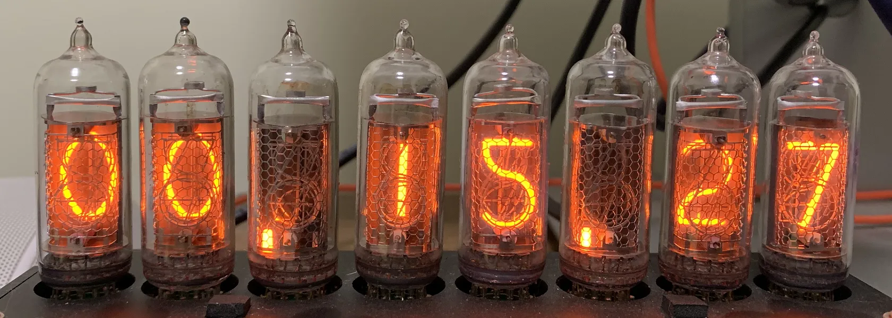

Hi, I’m Kele. Welcome to my personal blog, a place to log some of my random thought. I try to write in English but still some content in Chinese. Current topics included here are:
Generally target on Xilinx’s device. However, some parts should still suit for general design (e.g., Intel device and ASIC).
© 2021 Kele, CC BY-NC-SA 4.0